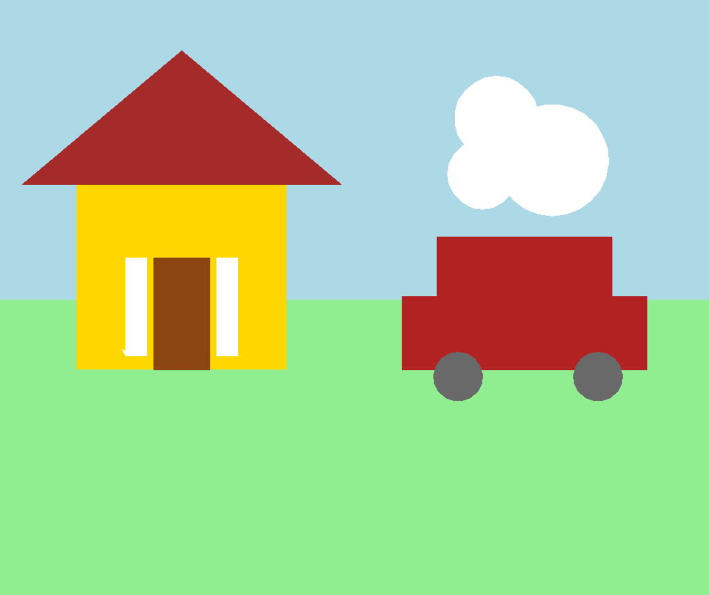
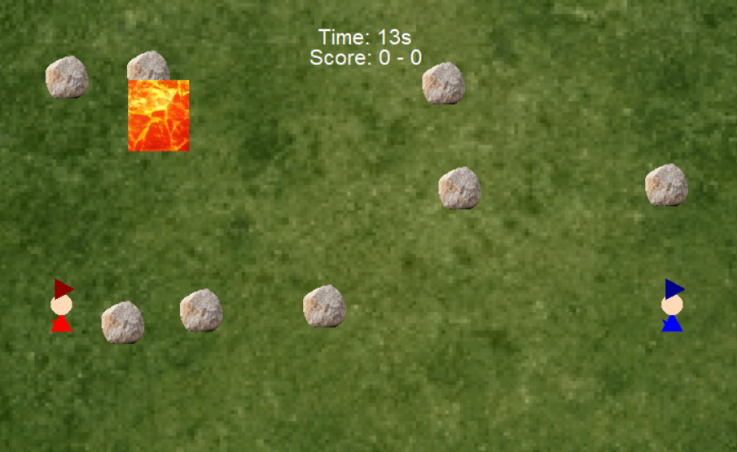
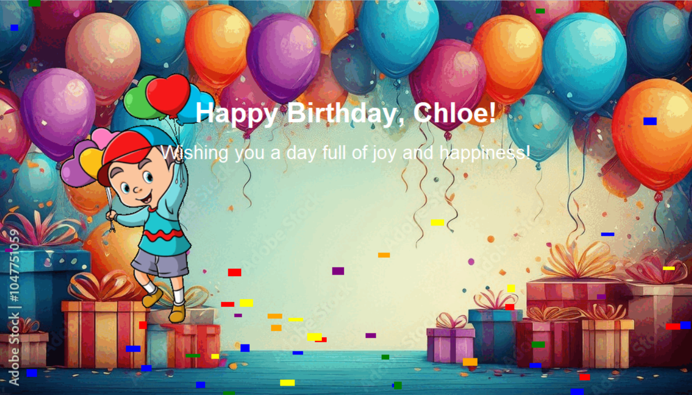
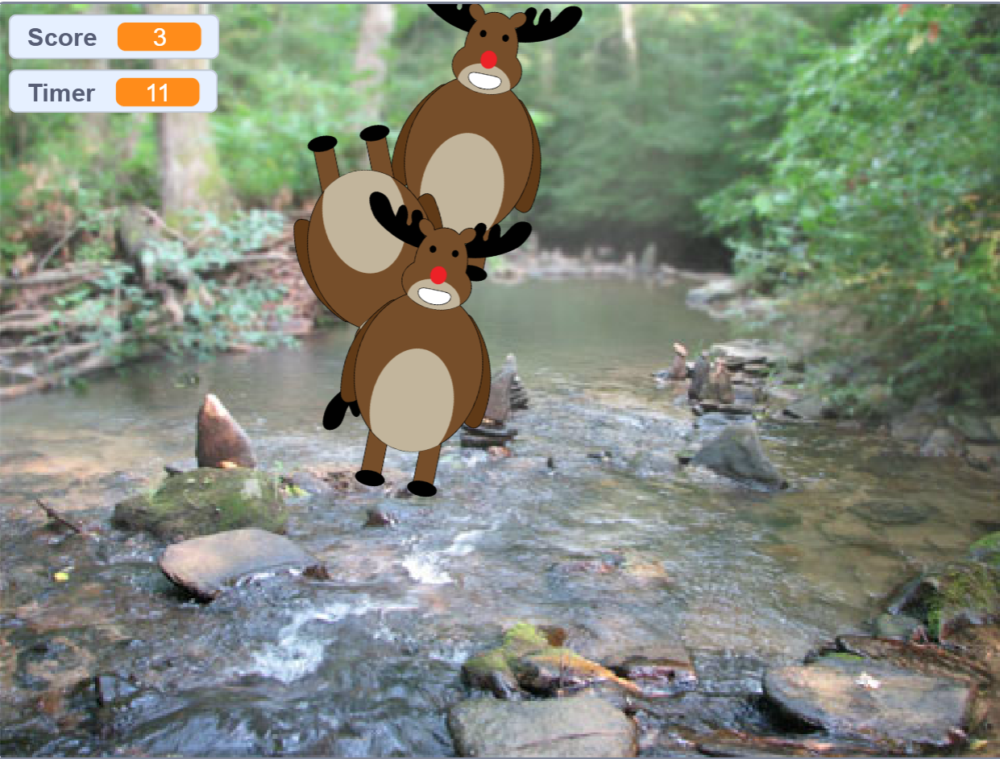
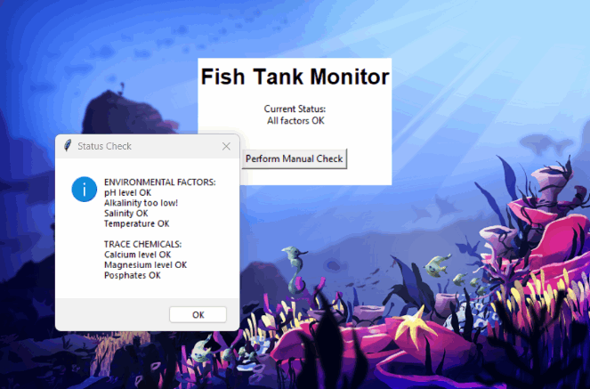
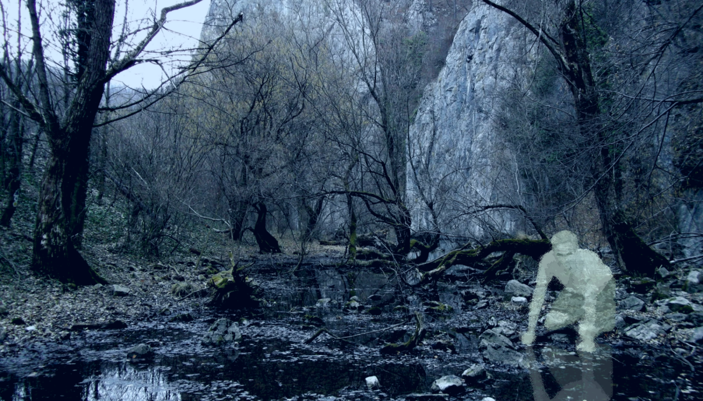

This is my Portfolio Page!

This is a code to build a house. You can change the house color, roof, windows, and what you want in your backyard.

Wizard Duel is a 2 player fighting game where you shoot fireballs to defeat your opponent. In a realm where power and precision entwine, two warriors stand, locked in an eternal dance of flame and fury. Their weapons—mighty fireballs—borne from the very heart of creation, are hurled with relentless force, yet the path they seek is not one of ease.
Before them, an ever-changing labyrinth of obstacles rises, a tempestuous sea of stone and shadow that bends and twists with every move. Each strike is a gamble, each arc of flame a challenge to fate.

This code will create a birthday card for you, with a small animation at the start. You can imput your name to get a customized message.

In this game, you can hunt deer. You click the deer to get a point and -1 point if you hit a SWAT guy.

This is a fish tank. It shows some stats.

Based on the data, the rover was in a marsh land biome. The planet had smooth, stable winds and low ambient light. It little had low wind. Between marsh lands and an inland forest, it was decided the planet must be a marsh land biome based on the noise levels.